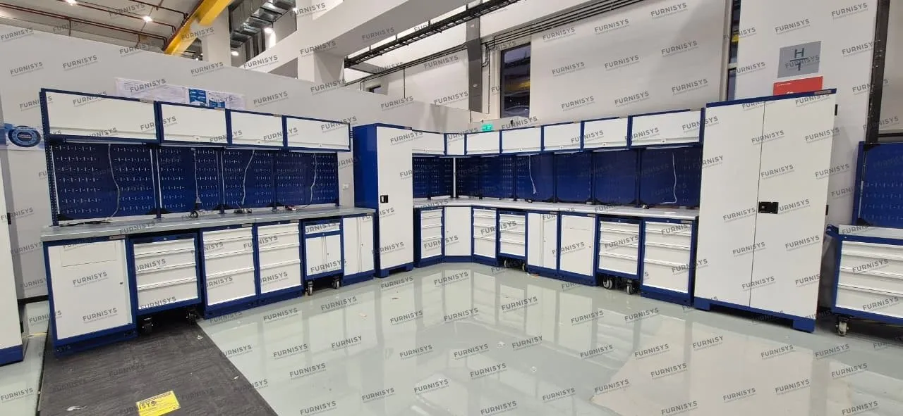

Situation :
Setting up a space for hands-on training
The client manufactures flame arresters, valves, and tank equipment, including equipment for cryogenic storage tanks, hydrogen applications, and lightning protection. These are the kinds of components that sit quietly on a tank or a vent line until the one moment they're needed: a flame arrester stops a flame front from traveling back into a vessel or pipeline, and a breather valve manages pressure and vacuum inside a storage tank as it fills, empties, or responds to temperature change. Understanding how these parts go together, and what happens when they're taken apart for inspection or maintenance, isn't something most people pick up from a manual alone.
That's the backdrop the client was building against. When the company set up a new sales office, it didn't design the space purely as a place to meet clients. It built a training academy into the same footprint, with a specific goal: give trainees a genuine hands-on experience with flame arresters and breather valves, not just a slide deck and a seat. The academy was meant to run both ways, structured classroom sessions for the conceptual side, and a physical space where trainees could actually work with the equipment.
The Challenge :
Finding one vendor who could deliver both quality and design

Designing that physical space came with a tension the client had already run into before contacting Furnisys. They wanted assembly tables that combined genuine build quality, something that could take repeated handling of components, with a design standard suited to a sales office. This wasn't a back-of-house workshop; it was a room that clients, partners, and visitors would also walk through. Furniture that looked purely industrial would undercut the sales-office half of the space. Furniture that looked purely corporate wouldn't hold up to actual training use.
The client had already tested this in the market. After evaluating several vendors, including local fabricators, they found a consistent pattern: one vendor could deliver the build quality they needed, another could deliver the design polish, but finding a single vendor capable of both, in the same build, proved difficult to source locally. That gap, between industrial durability and sales-office presentation, was the actual problem to be solved, more than any single spec on a table.
The Question :
How do you build one room that satisfies two different standards?
How do you configure a training station that holds up to repeated hands-on assembly and disassembly work, while also fitting the design standard of a space used to host clients, without quietly treating either requirement as the secondary one?
The Furnisys Approach
Configuring around the training sequence, not a generic office fit-out
Furnisys took on the project as a consultancy and configuration engagement rather than a straightforward furniture order. That distinction mattered here: the brief wasn't "assembly tables," it was a training academy that needed to function a specific way. Working from that requirement meant starting with what the trainees would actually be doing at the table, handling flame arrester and breather valve components, taking them apart, putting them back together, under instruction, and configuring around that sequence, rather than adapting a generic office setup to fit the room.
1. The Scitec Workstation
Where the hands-on training actually happens
The centerpiece of the configuration is one Scitec Workstation. The Scitec Series is Furnisys's adaptable workbench line, built for technical work that sits between a standard office desk and a heavy industrial workbench, the kind of surface that needs to look considered while still handling hands-on use. For this project, the workstation was configured for the training academy's core activity: trainees working directly with flame arrester and breather valve components as they learn assembly and disassembly under supervision. It's the one surface every training session comes back to, the point where the theoretical part of the program (covered in classroom sessions) turns into something a trainee has actually done with their hands.

2. Mobile Cabinets
Storage that moves with the session
Alongside the workstation, Furnisys provided two mobile cabinets, each fitted with five drawers, for organized storage and easy mobility. Furnisys's storage cabinet range is built around the same logic that runs through the rest of the brand's product line: storage should be organized by design, not by habit. In a training environment, that means components, tools, and materials used across sessions have a defined place to return to, rather than accumulating loosely around the workstation. The mobility of the cabinets means the storage isn't fixed to one position in the room, it can move with the session rather than dictating where the session happens.

How the Setup Works Together
One setup, not three separate purchases
The workstation and the two cabinets weren't specified as three separate purchases, they were configured as one setup. The workstation carries the physical, hands-on part of the training: it's where the actual work with flame arrester and breather valve components takes place. The cabinets carry everything that supports that work but doesn't need to live on the worktop itself, components not currently in use, tools, and materials specific to the training sessions. Because the cabinets are mobile, the arrangement isn't locked into a single floor plan; the room can be reconfigured as different sessions or group sizes require, without needing to move or replace the storage itself.
That combination, one fixed point for the hands-on work, mobile storage around it, is a small design decision, but it's the kind of decision that determines whether a training room actually functions day to day or slowly becomes cluttered and improvised.
What the Configuration Enabled
What the client actually got, in their own terms
No performance metrics are recorded for this project, no time-savings figures, throughput numbers, or ROI claims are made here, because none exist in the project record. What is documented is more specific to the brief itself: the configuration met the client's stated needs for functionality, durability, and aesthetic appeal, and it aligned with both the design intent and the operational goals behind building the training academy in the first place. In practical terms, that means the client got a training space that could do double duty, credible enough in appearance to sit inside a sales office, and durable enough to support repeated hands-on training on real equipment.

Furnisys Perspective
Furniture with a job to do, not furniture that's just present
Training environments built around real, physical equipment carry different demands than a standard office or a lecture-style classroom. The furniture isn't incidental to the space, it's part of how the training actually happens. A workstation that looks right on day one but can't take repeated handling becomes a liability by month three; a bench built purely for durability, dropped into a sales office, sends the wrong signal to the clients walking past it. Configuring around the client's actual training sequence, rather than treating "assembly tables" as an interchangeable line item, was the point of this project, and it's consistent with how Furnisys approaches any space where the furniture has a functional job to do beyond simply being present.
FAQ
What should an industrial training workstation include?
A configured training workstation generally needs a durable work surface built for the specific hands-on task, plus dedicated storage for tools and components used during sessions. In this project, that meant a Scitec Workstation for hands-on assembly and disassembly work, paired with two mobile cabinets for storage.
What's the difference between a training workstation and a standard workbench?
A training workstation is configured around a specific training activity, while a standard workbench is typically built for general-purpose work without that layer of configuration. Here, the workstation was set up specifically for flame arrester and breather valve assembly and disassembly training, not general bench work.
Can training furniture also work in a client-facing space, like a sales office?
Yes — training furniture can be built to a design standard suited to spaces clients walk through, not just back-of-house workshops. That was the specific brief in this project: a training academy integrated into a new sales office, where the furniture needed to hold up to hands-on use while also fitting the room's presentation.
Why use mobile cabinets instead of fixed storage in a training room?
Mobile cabinets let storage move with the session instead of locking the room into one layout. In this project, two mobile cabinets with five drawers each were used for organized, movable storage around the training workstation.
What is a flame arrester, and why is hands-on training on it useful?
A flame arrester is a passive safety device that stops a flame front from traveling into a tank, vessel, or pipeline carrying flammable gases or vapors. Because it's a critical but often overlooked safety component, hands-on training in how it's assembled and serviced builds a level of familiarity that documentation alone doesn't provide.
What is a breather valve, and why is hands-on training on it useful?
A breather valve manages pressure and vacuum inside a storage tank as it fills, empties, or reacts to temperature change, protecting the tank from over-pressurization or collapse. As with flame arresters, working with the valve directly supports more confident inspection and servicing in the field.
How does Furnisys configure a workstation around a specific training requirement?
Furnisys starts from the actual sequence of tasks a training program needs, rather than fitting a generic setup into the space. In this project, that meant configuring the Scitec Workstation and mobile cabinets specifically around hands-on flame arrester and breather valve assembly and disassembly.
What industries typically need a configured training workstation like this?
Manufacturers of technical or safety equipment who run in-house training programs — where trainees need to physically handle and work on real components rather than learn exclusively through classroom instruction — are the clearest fit.